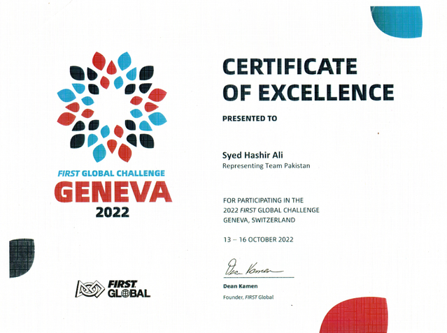
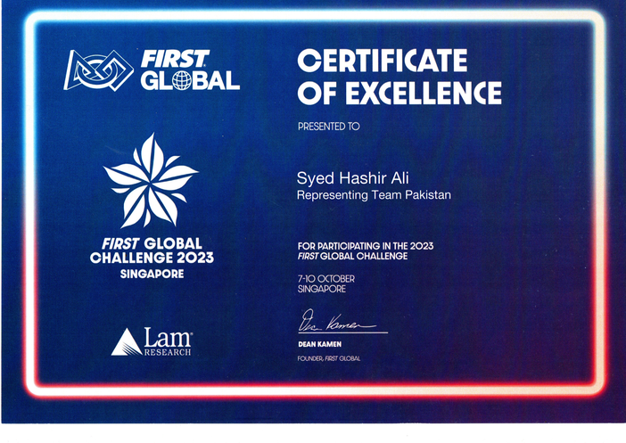
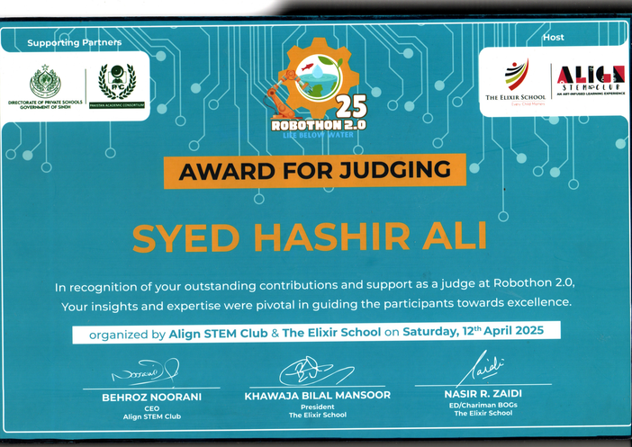
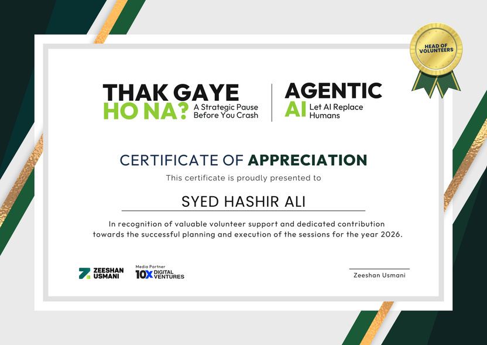
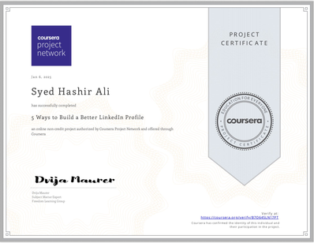
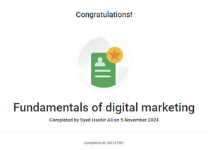
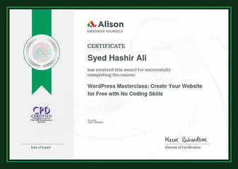

FIRST Global · Geneva, Switzerland
Certificate of Excellence
2022 Carbon Capture Challenge · Certificate signed by FIRST Global founder Dean Kamen.
Training and recognition gathered across robotics, computer science, digital growth, and community event leadership.
Seven original certificate scans embedded in your portfolio PDF have been extracted and converted to PNG. The separate certificate PDF in the folder is empty; re-upload it if it contains additional certificates to add.

2022 Carbon Capture Challenge · Certificate signed by FIRST Global founder Dean Kamen.

2023 FIRST Global Challenge · Representing Team Pakistan.

Track The Line · Presented April 2025.

Recognizing volunteer support and contribution to event sessions in 2026.

Completed January 2025.

Completed November 2024.

Create Your Website for Free with No Coding Skills.
Listed in the portfolio’s certifications.
Listed in the portfolio’s certifications.
Listed in LinkedIn certifications.
ROBOTRON ’26 · Listed in LinkedIn certifications.
Listed in the profile’s certifications.